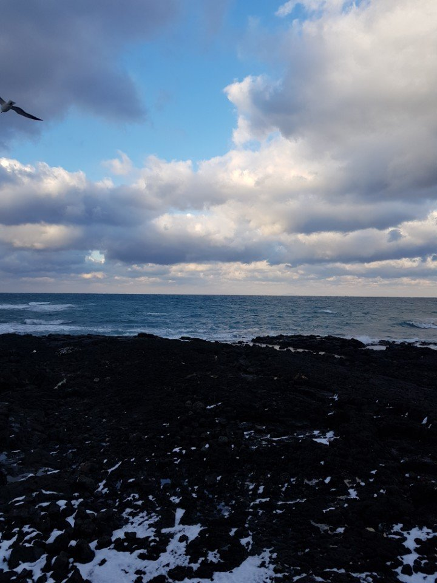
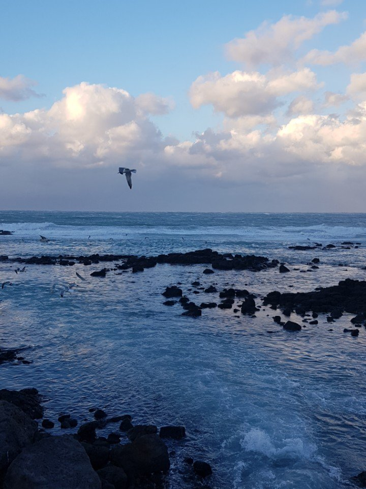

Most visitors think of Jeju as a summer island, but winter has its own rewards: orange trees heavy with tangerines, red camellias in bloom, snow on Hallasan and far fewer crowds on the coast. It is milder than Seoul, but it is not warm, and the wind can change your plans. Here is what to expect and how to make the most of a winter trip.
What the weather is like
Jeju is usually the mildest part of Korea in winter. On the coast, daytime temperatures from December to February are typically in single figures Celsius, a little above freezing at night, and snow rarely settles in Jeju City or Seogwipo. Seogwipo, on the south side of the island, is often slightly warmer than Jeju City in the north.
The catch is the wind. Strong, cold winds off the sea make it feel much colder than the thermometer suggests, and it can be grey and showery for days. The higher you go, the colder it gets: the slopes of Hallasan regularly have deep snow from December into March. See our weather by season guide for the rest of the country.

Tangerine season
Jeju is famous for its tangerines, called gyul (귤), and winter is the season. The main harvest of the familiar small tangerines runs roughly from late October or November into January, depending on the year, with other varieties such as hallabong following later in winter.
- Tangerine picking: many farms, especially around Seogwipo, let visitors pick their own for a small fee and take a bag home. Search "귤따기" (tangerine picking) in Naver Map or KakaoMap to find farms near you and check whether they are open that day.
- Tangerine cafés in old farm buildings among the orchards are a Jeju speciality.
- Buying to take home: boxes are sold at markets and roadside stalls. Check your home country's rules before packing fresh fruit; many countries do not allow it.
Camellias in bloom
Camellias (동백, dongbaek) flower on Jeju through the winter, with different varieties from late autumn to early spring. Their red and pink flowers against the dark green leaves are one of the island's classic winter sights.
- Camellia Hill in Andeok, south-west Jeju, is a large garden planted with hundreds of varieties.
- Wimi-ri, in the south-east, has old camellia windbreaks planted by local farmers and a quieter village feel.
- Many smaller gardens and cafés also have camellia trees; the best time depends on the variety and the year.
Check opening times and admission on Naver Map or KakaoMap before you go, as they change by season.
Snow on Hallasan
Hallasan, at 1,947 metres the highest mountain in South Korea, is spectacular under snow, with frosted trees above the clouds. A winter hike is a highlight of a Jeju trip, but treat it seriously.
- Summit reservations: at the time of writing, hiking to the summit crater (Baengnokdam) on the Seongpanak and Gwaneumsa trails needs a free advance reservation on the official Hallasan reservation website (visithalla.jeju.go.kr), while the lower sections of these trails and the shorter trails do not. Rules have changed in recent years, so check the official site before you go.
- Cut-off times: each trail has a latest time to pass certain checkpoints, and you must start early in the morning to reach the summit. Daylight is short in winter.
- Crampons are essential once there is snow or ice. Small chain crampons (아이젠) are sold at shops near the trailheads and in outdoor shops in town. Bring gaiters, gloves, warm layers, water and snacks.
- Closures: trails and mountain roads are closed in heavy snow or storms, sometimes at short notice. Check the official website on the morning of your hike.
- Easier options: the Eorimok and Yeongsil trails give beautiful snowy views without going to the summit, and Eoseungsaengak is a short walk near Eorimok.

Getting around in winter
Most visitors hire a car on Jeju, and in winter that needs extra care. The coastal roads are usually fine, but the roads over the middle of the island towards Hallasan (such as the 1100 Road and 5.16 Road) can ice over or close, and some require snow chains or winter tyres when it snows. Ask your rental company about winter equipment and check road conditions before you set off.
Buses are a good alternative. Jeju's bus network covers the coast and the main trailheads, and in snowy weather it is often safer than driving yourself. Use Naver Map or KakaoMap to plan routes.
Flights and the weather
Strong winds and snow can delay or cancel flights to and from Jeju in winter, sometimes for a day or more. To reduce the risk:
- Avoid booking your Jeju flight on the same day as your international flight home.
- Keep a buffer day at the end of your trip if you can.
- Follow your airline's app or text messages, and check flight status before leaving for the airport.
What to pack
Pack for wind more than for deep cold: a windproof jacket, a warm mid layer, a hat, gloves and comfortable waterproof shoes. Add crampons and proper hiking boots if you plan to climb Hallasan. Convenience stores sell hand warmers. See our Korea packing list for the full list.
Planning your trip
Our 3-day Jeju itinerary works in winter too; just keep the Hallasan day flexible in case of snow or wind. For more seasonal ideas, see our month guides for December, January and February, and the winter travel guide for the rest of Korea.
FAQ
Is Jeju worth visiting in winter?
Yes, if you like quiet coastlines, tangerine picking, camellias and snowy mountain views. Just expect wind, short days and the chance of weather delays.
Does it snow in Jeju?
Snow rarely settles on the coast, but Hallasan and the higher roads often have heavy snow from December to March.
Do I need a reservation to hike Hallasan in winter?
At the time of writing, a free reservation is needed for the summit sections of the Seongpanak and Gwaneumsa trails. Check the official Hallasan reservation website before your trip.
When is tangerine season in Jeju?
The main harvest usually runs from about November into January, with other citrus varieties later in winter.
Is it safe to drive in Jeju in winter?
The coastal roads are usually fine, but mountain roads can ice over or close in snow. Ask your rental company about winter equipment, or use buses on snowy days.